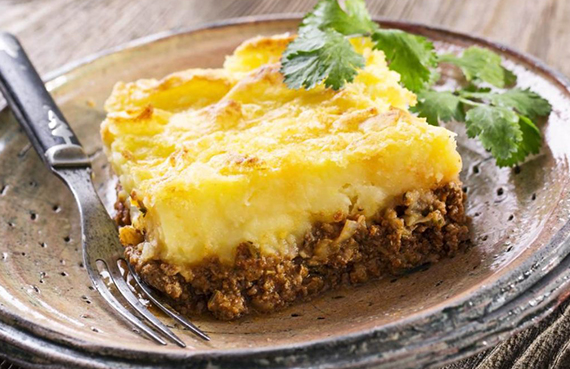
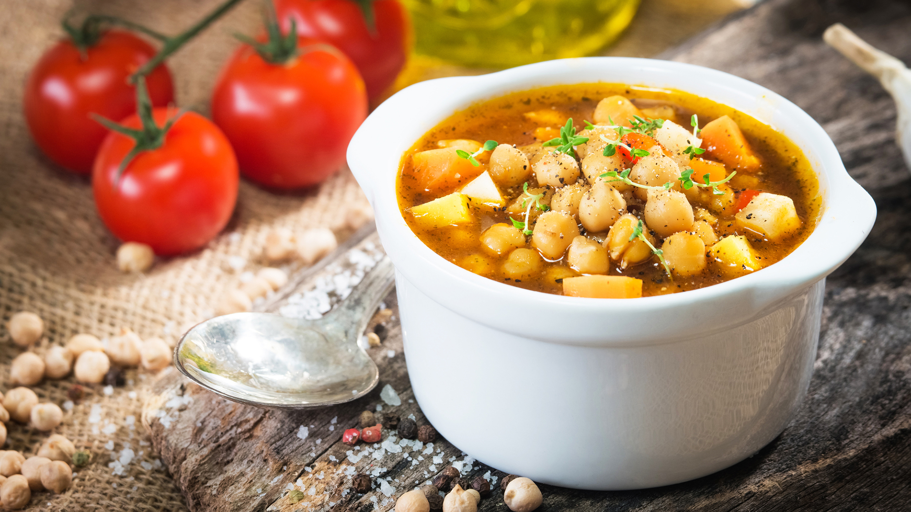
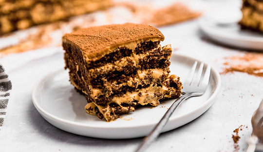
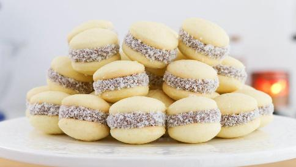
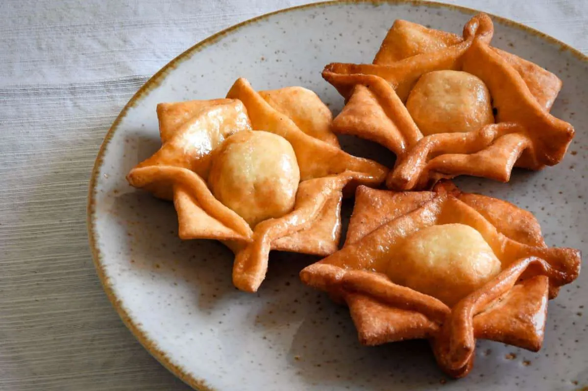

Platos con sabor
En esta sección vas a encontrar recetas que forman parte de nuestra identidad: preparaciones clásicas, sabores intensos y \ combinaciones simples que conquistaron generaciones. Desde la parrilla hasta la mesa, cada plato cuenta una historia.
Empanadas de carne
¿Hay algo más argentino que el aroma de empanadas recién salidas del horno? Doradas, jugosas y llenas de sabor, nuestras empanadas de carne son ese bocado perfecto que reúne tradición y pasión en cada mordida. Ideales para compartir, para una reunión improvisada o simplemente para darte un gusto bien criollo.
Ver receta
Pastel de papa
Si hay un plato que convierte cualquier comida en un momento especial, es el pastel de papas. Capas suaves de puré cremoso y un corazón de carne bien condimentada que perfuma toda la cocina.
Ver receta
Locro Argentino tradicional
Cada cucharada combina historia, fuego lento y el sabor inconfundible de nuestras raíces. Ideal para compartir, para reunir a la familia o para vivir una verdadera experiencia criolla en tu propia cocina.
Ver receta
Chocotorta clásica
¿Existe algo más tentador que una chocotorta bien fría esperando en la heladera? Capas suaves, dulces y chocolatosas que se derriten en la boca y hacen que cada cucharada sea pura felicidad. Sin horno, sin complicaciones y con ese sabor que nos lleva directo a la infancia. Preparala una vez… y preparate para que te la pidan siempre.
Ver receta
Alfajorcitos de maicena
Livianos, suaves y con ese corazón de dulce de leche que se desarma al primer mordisco… los alfajores de maizena son pura tradición argentina.
Ver receta
Pastelitos
Crujientes, dorados y con ese relleno dulce que se funde en cada mordida… Los pastelitos criollos no son solo una receta, son tradición argentina en estado puro. Perfectos para acompañar unos mates o celebrar una fecha especial, su hojaldre irresistible y su corazón de membrillo o batata hacen que nadie pueda comer solo uno.
Ver receta